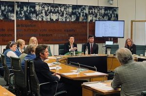
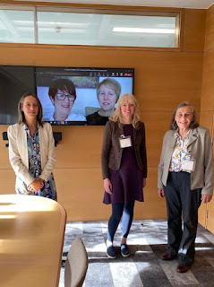

On March 9th last year (2022) I travelled to Westminster with friends and fellow-campaigners, lobbying for the legal right to a care supporter -- caregiver, care partner... The terminology doesn't matter too much. It's the right to have someone who we love to be with us in a time of need. This might be when we're in a hospital, a care home, a mental health unit or anywhere else in our fragmented health and care system where we're likely to feel powerless and afraid.
I wrote a blog before I left home, listing just a few of the unseen people who would be travelling to London with me. I mentioned Daniel, repeatedly put into ‘seclusion’ in a mental health unit when he cried out for his wife.
I remembered Riya, a woman younger than me, struggling to recover from a stroke among people who didn’t speak her language or understand the ritual dimension of her food needs. Riya was lucky to be alive but her doctors found her apathetic and her family were certain that she needed them to comfort and interpret for her and simply hold her hand.
It would be hard to forget Betty, sent into a care home from hospital for a fortnight’s respite while equipment was installed to enable her to return home safely to live with her friend Rosemary. No one told them that this would mean strict isolation and a lonely death for which Betty's GP ‘could find no physical cause’. There was Tom, as well, a man in his 30s with a regressive condition which had reduced him to pre-toddlerhood, wearing nappies, crawling, no longer able to speak. Government guidance insisted that Tom must have either accommodation in a specialist facility or access to the love and understanding of his elderly parents. Not both. Why not?
Susan and David had travelled there in person to tell MPs about the damage that separation was inflicting on their profoundly disabled daughter. Wendy, living with dementia, explained the dangers of being questioned alone in hospital when you can’t reliably remember. John expressed the anguish of being prevented from caring for his wife, Lesley. Anne talked about being given more time with her mother’s dead body than the total she’d been ‘allowed’ during the 16 months her mother had lived in a care home. We all knew that this was our chance to make the politicians understand.
‘Is there anybody there?' said the Traveller
Knocking on the moonlit door
And his horse in the silence champed the grasses
Of the forest’s ferny floor.
 |
| Tracey Crouch (centre), Dan Carden & Liz Saville Roberts (facing camera) |
{kind=link}
The MPs listened. Tracey Crouch MP -- who was co-chairing this all-party event together with Dan Carden MP, Daisy Cooper MP and Liz Saville Roberts MP -- said she had arrived sceptical but within less than 15 minutes had been convinced of the need for legal change. ‘Who could possibly be opposed to this?’ asked Hilary Benn MP. ‘I thought it was our job to make the laws!’ Thangham Debbonare MP burst out when a speaker described the constantly shifting ‘rules’ imposed on families. Peter Dowd MP went straight from the event into Prime Minister Questions and described the ‘harrowing’ experiences he had just heard.
And a bird flew up out of the turret
Above the Traveller’s head
As he smote upon the door a second time
Is there anybody there? he said.
Then Gillian Keegan MP, the Care Minister arrived, tossing her wavy locks and smoothing her full-skirted frock. ‘I get it,’ she said. ‘I really get it!’ It was obvious that she didn’t ‘get it’ at all because she hadn’t even pretended to listen. As one campaigner described it afterwards, it was as if all the life and warmth and understanding was sucked from the room.
But no-one descended to the Traveller.
No head from the leaf-fringed sill
Leaned over and looked into his grey eyes
Where he stood perplexed and still.
One of the harsh lessons we have been learning is how little real power MPs have, even the most clear-eared and best-hearted listeners among them. Sixty backbench MPs from all parties had signed the call for change that had achieved this March 2022 meeting yet they were effectively being disregarded.
But only a host of phantom listeners
That dwelt in the dark house then
Stood listening in the quiet of the moonlight
To that voice from the world of men.
The core group of MPs continued to use the remnants of democratic procedure . In October 2022 Dan Carden MP, Tracey Crouch MP, Daisy Cooper MP and Liz Saville Roberts MP secured a backbench business debate in the chamber of the House of Commons. Again, we travelled to London, bringing other people's anguish with us. Again, there was eloquence and understanding from the parliamentarians and this time the new Care Minister Helen Whately MP attended throughout.
Stood thronging the faint moonbeams on the dark stair
That goes down to the empty hall,
Harkening in the air stirred and shaken
By the lonely Traveller’s call.
She listened. At the end of the debate she convinced us that she had heard and would act. We believed her. A few days later we were invited to her office in the Department of Health together with smiling, apparently friendly civil servants. We made our case -- once again. We posed for photos. We offered names of professionals throughout the health and care service who would help to implement the simple legal right we sought. We believed we had been heard and action would follow.
 |
| Helen Whately, Diane Mayhew & Jenny Morison, Helen Wildbore, Julia Jones |
{kind=link}
Afterwards I went to sit in the domed space of Westminster Cathedral to let my happiness settle.
Silence returned like disturbed dust descending. More months passed. My fellow-campaigners and I realised, reluctantly that we'd failed to pay sufficient attention to the moment when the Care Minister glanced towards an office next door and mentioned that she couldn’t answer for Health. We hadn’t then understood the impenetrability of the divide that separates one set of civil servants and advisers from another.
And he felt in his heart their strangeness
Their stillness answering his cry.
While his horse moved, cropping the dark turf
Neath the starred and leafy sky.
For he suddenly smote on the door even
Louder, and lifted his head.
‘Tell them I came and no one answered,
That I kept my word,’ he said.
As we began to experience the departmental inertia we asked other organisations to sign the paper that explains our simple request. More than sixty charities, care providers, disability support groups have since added their logos to our list. Together with the sixty MPs and people they represent, our request for legal change now comes from millions, not thousands of people.More join every day.
It appears, however, that this means nothing to the Social Care civil servants who are tasked to listen but don’t hear, or to the Health ministers who won’t answer. Instead the DHSC plays its own quietly divisive political game, suggesting different ‘concessions’ to different groups, keeping people separate and using demands for 'confidentiality' to cloak inaction and suppress debate.
Never the least stir made the listeners
Though every word he spoke
Fell echoing through the shadowiness of the still house
From the one man left awake.
Ay, they heard his foot upon the stirrup
The sound of iron on stone
And how the silence surged softly backwards
When the plunging hooves were gone.
When I used to read this poem ('The Listeners' by Walter de la Mare) to my mother in the care home where she spent her last years of her life, I always felt a little let down by de la Mare's ending. That last word ‘gone’ is weak as a rhyme with ‘stone’. And anyway I didn't think the narrator should have galloped away, I think he should have gone in and faced the silence.
My fellow campaigners and I haven’t been reading poetry for the last few days, as we approach the March 9th anniversary of that first Parliamentary event, we’ve been reading What’s App messages. I read a message from Helen Whately MP: ‘To prevent husbands seeing wives because they happen to live in care homes for months and months is inhumane'. She also appears to have understood the risk of ‘lives lost because of old people just giving up as well as Covid’. But when her insights were brushed aside by the Secretary of State, she appears to have accepted this.
I remember watching her giving evidence to the Joint Committee on Human Rights, obviously disagreeing with the policy of effective imprisonment for people living in care homes yet deferring to the unelected Public Health official Dr Eamonn O’Moore (responsible for care homes and prisons) as he prolonged the lock-in for fellow adults whose voices he wouldn’t hear. How is this ethical? How is it democratic?
Former education secretary Gavin Williamson has wondered aloud whether he should have resigned when he lost his battle for children’s continuing in school. But he didn’t.
Has Helen Whately, has any government minister cared so passionately for the damage inflicted on separated families that they’ve thought about leaving the stifling alienation of the DHSC and galloping away into the night, shouting for human rights? No.
Well, we’re not leaving either. In fact, I’m tempted to pick up the stone from the end of Walter de la Mare’s poem and throw it at their gleaming glass facade. Whatever it takes to shatter the silos' silence.
| The Department of Health & Social Care 39, Victoria Street, London |
{kind=link}